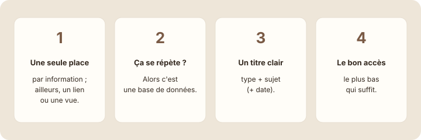

Et maintenant ?
À la fin de cette leçon, tu sauras comment continuer à utiliser Notion au quotidien, en commençant petit.
Étape 1 : comprendre
La formation se termine, mais c'est maintenant que tout commence : dans ton propre travail. Les fonctions s'oublient vite si on ne s'en sert pas ; les réflexes, eux, restent. En voici quatre à garder.

Et une recommandation : commence petit. Ne migre pas tout ton travail dans Notion en un week-end. Choisis une seule chose (le suivi de tes tâches, ou les comptes rendus de ton équipe), fais-la vivre deux semaines, puis ajoute la suivante.
Commence petit, fais vivre une seule base ou une seule page, puis agrandis.
Astuce : Notion propose une galerie de modèles (Templates, en bas de la barre latérale) : des pages et des bases déjà construites. Avec ce que tu sais maintenant, tu peux en ouvrir un, comprendre comment il est fait et l'adapter à ton équipe.
Studio Nova, trois mois plus tard
Voici comment Emma, Lucas et Sarah utilisent Notion, trois mois après la mise en place de l'espace.
| Au début | Trois mois plus tard |
|---|---|
| Emma construisait tout elle-même. | Chacun ajoute ses tâches et ses comptes rendus, au bon endroit. |
| Lucas cherchait ses tâches dans plusieurs pages. | Lucas ouvre sa vue « Mes tâches » chaque matin. |
| Sarah envoyait ses remarques par e-mail. | Sarah commente directement les pages, avec des mentions. |
| Le rangement se faisait « quand on avait le temps ». | Dix minutes de rangement chaque vendredi, inscrites dans les tâches. |
L'outil n'a pas changé : ce sont les habitudes de l'équipe qui ont fait la différence.
Ton plan pour la suite
Prépare ton plan pour les quatre prochaines semaines.
- Dans ton espace, crée une page « Plan — Notion au quotidien ».
- Semaine 1 : choisis une seule chose à faire vivre dans Notion (par exemple ta base « Mes projets »). Écris-la.
- Semaine 2 : ajoute une vue utile (un board ou un calendrier) et sers-t'en chaque jour.
- Semaine 3 : invite un collègue sur une page, au bon niveau d'accès, et échangez par commentaires.
- Semaine 4 : fais ton premier rangement de dix minutes, puis décide de la prochaine chose à ajouter.
Exercice · dans Notion
Ton plan sur quatre semaines
- Crée la page « Plan — Notion au quotidien ».
- Écris une action concrète par semaine, avec une date.
- Ajoute la page à tes favoris pour la retrouver chaque semaine.
Résultat attendu : une page en favori avec quatre actions datées. Dans un mois, ton propre espace sera aussi vivant que celui de Studio Nova.
Étape 4 : vérifier
À retenir
- Quatre réflexes : une seule place, une base pour ce qui se répète, des titres clairs, le bon accès.
- Commence petit : une seule chose à la fois, puis agrandis.
- Les modèles de Notion sont une bonne source d'idées, maintenant que tu sais les lire.
Choisis une réponse avant de valider.
Commencer petit permet de créer des habitudes avant d'agrandir l'espace.
Bravo, tu as terminé la formation !
Tu sais maintenant créer des pages, les organiser, construire des bases de données, les afficher de plusieurs façons, monter un espace d'équipe et le partager en sécurité. Ta progression est enregistrée sur cet appareil.